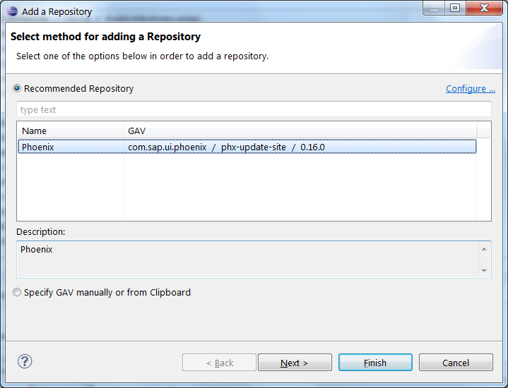
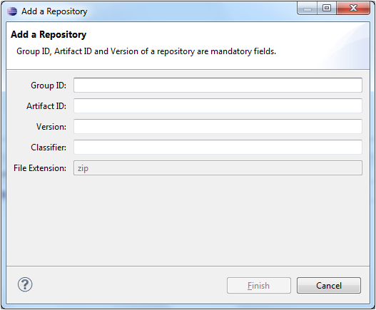

Adding a Repository
The "Add a Repository" wizard allows to add a repository to a target definition.
All features in the repository are automatically added to the target definition file with the generic latest version "0.0.0"
The "Add a Repository" Wizard
Opening the Add Repository Wizard
The wizard can be opened by clicking on the "Add Repository" button in the "Repositories" page in the Tycho Target Editor.
Details of the Add Repository Wizard
A repository can be added by either:
- Selecting a repository from the recommended list of repositories
- Adding a repository manually by entering the Maven coordinates
Recommended Repository

This page allows to add a repository by selecting a repository from the recommended list of repositories.
- Select a repository from the list and review the repository details by using on the "Next" button.
- The selected repository can also be added directly to the target file by using on the "Finish" button.
- The list of recommended repositories is retrieved from an URL that can be configured in the Preferences. The preference page can be opened by clicking on the "Configure" link.
Adding a repository manually
A repository can be added manually by clicking on the option "Specify GAV manually or from clipboard"

User has to enter the following details (maven coordinates) to add a Repository:
-
Group ID:
- Group ID of the repository to be added
-
Artifact ID:
- Artifact ID of the repository to be added
-
Version:
- Version of the repository to be added
-
Classifier:
- Classifier information of the repository. E.g. : assembly
User can leave this field empty if the repository has no classifier specified.
-
File Extension:
- Currently the supported File Extension is ".zip" and this field is not editable.
The fields of the dialog are prefilled if the clipboard contains either a valid Nexus Repository URL or a GAV xml snippet copied from the Nexus UI
(e.g. Nexus Search -> select an artifact form the search results -> tab Maven Information).
Possible validation error messages:
- Group ID, Artifact ID, Version (GAV) of a repository are mandatory fields that need to be specified
- Repository with the given group id and artifact id already exists in the target file
- No valid p2 repository with the specified parameters could be found
- Specified version of the requested repository could not be found on Nexus
- Possible Reason: p2 Repositories not available in Nexus cannot be added
- Given location is either not a valid p2 repository or does not contain any Installable Units
- Possible Reason: Invalid p2 repositories or empty repositories cannot be added.
See also : Tycho Target Editor